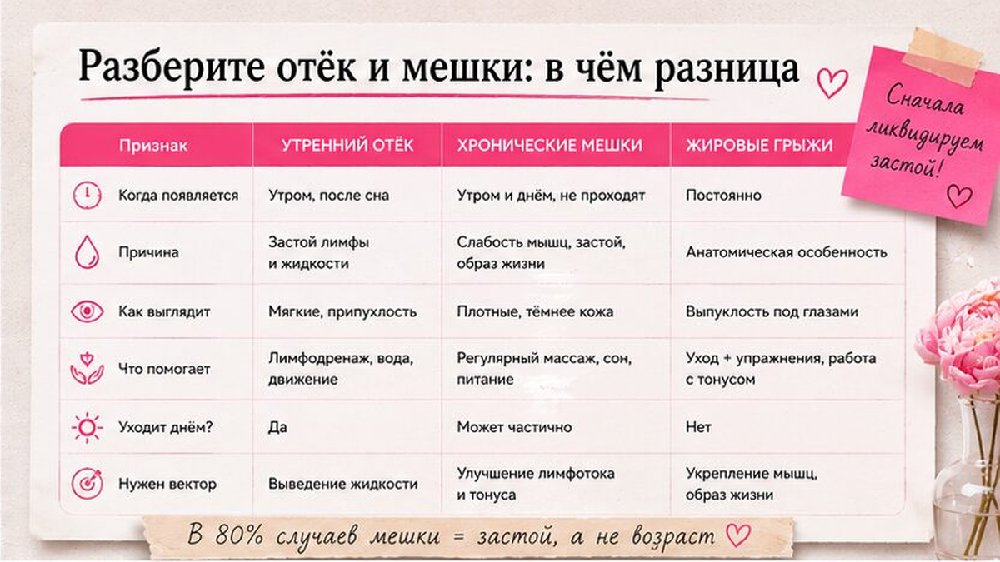
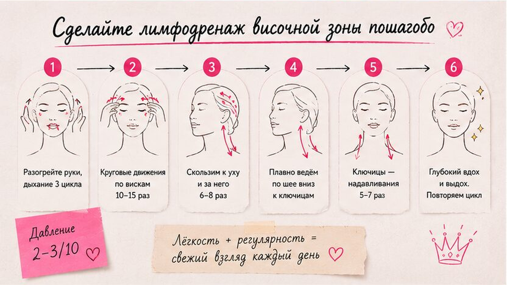
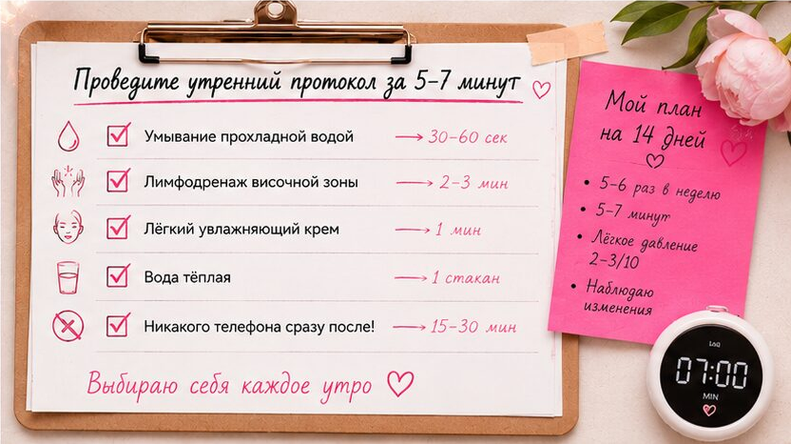

Мешки под глазами по утрам часто пугают сильнее, чем реально портят лицо. В большинстве случаев это не "возраст навсегда", а застой жидкости в тонкой зоне века, который усиливается, когда висок и челюсть работают в напряжении. Хорошая новость: дома можно мягко запустить отток через лимфодренаж височной зоны за 5-7 минут - без давления на глаза и без обещаний "минус десять лет за неделю".
Временный отёк спадает к обеду, стойкие мешки держатся дольше. Лимфа - это "канализация" тканей: если височная зона зажата, жидкость застаивается под глазами. Утренний протокол: расслабить челюсть → мягко проработать виски → лёгкие движения от внутреннего уголка глаза к виску. Давление - 2-3 из 10, без боли.
Я работаю с мешками как с зоной оттока, а не как с "дефектом", который нужно выдавить. Наша задача - разгрузить висок, улучшить микроциркуляцию и перестать тянуть кожу под глазами агрессивными движениями. Ниже - понятная схема: как отличить отёк от мешков, пошаговый лимфодренаж и типичные ошибки.

Отёк - это когда утром под глазами "подушечка", а к вечеру или после активности она заметно уменьшается. Мешки - более стойкая припухлость, которая держится неделями и не всегда связана с одной бессонной ночью.
Тест за 30 секунд:
Делайте: ведите простой дневник 3-4 дня (сон, соль, алкоголь, время подъёма). Не делайте: путать хронический отёк с аллергией или воспалением - там другой протокол.

Лимфа - это сеть тонких "трубочек", которые уносят лишнюю жидкость из тканей. Висок - важный узел оттока для нижнего века: когда жевательные мышцы и височная область зажаты, жидкость дольше задерживается под глазами.
Делайте на чистой коже с каплей лёгкого масла или эмульсии. Движения только от центра лица к периферии, давление - 2-3 из 10.
Частота для старта: 4 раза в неделю утром. Если кожа спокойная - до 5-6, но без "ударных" сессий подряд.

Утро - лучшее время: за ночь жидкость скапливается, и мягкий отток даёт самый заметный визуальный эффект. Вечером этот же протокол помогает снять дневное напряжение, но не заменяет полноценный сон.
Миниплан: прохладное умывание → лимфодренаж височной зоны → лёгкий крем без активного втирания → 10 минут без телефона лицом вниз (подушка не слишком высокая).
Если вы привыкли спать лицом в подушку, попробуйте на неделю сменить положение - это часто сильнее любого патча. Для общего снятия зажима лица перед стартом подойдёт короткий протокол расслабления за 5 минут.
Самая частая ошибка - "выдавить" мешок сильным нажатием. Вместо оттока ткань получает микростресс, и к вечеру зона выглядит ещё более уставшей.
Чеклист перед стартом:
проверьте расслабление челюсти, используйте средство скольжения, добавьте таймер на 7 минут, избегайте давления на мягкую часть нижнего века, не делайте сессию при раздражении или аллергии.
| Ошибка | Что происходит | Как исправить |
|---|---|---|
| Сильное давление под глазами | Покраснение, отёк усиливается | Работать по косточке, давление 2-3/10 |
| Движение "от виска к носу" | Застой усиливается | Только от центра к периферии |
| Зажатая челюсть | Висок не расслабляется, отток слабый | Расслабить губы и язык перед стартом |
| Работа по сухой коже | Трение и раздражение | Добавить средство скольжения |
| Ежедневно без пауз | Реактивная чувствительность | 1-2 дня отдыха в неделю |
Домашний лимфодренаж височной зоны - про мягкий застой и привычки. Есть ситуации, где массаж только усугубит проблему.
Если отёки усиливаются от соли и поздних ужинов, посмотрите материал про тейпы на ночь для зоны лба - там та же логика: снять ночной зажим, чтобы лицо утром выглядело спокойнее. А чтобы подобрать уход под ваш тип кожи, пройдите короткую диагностику - это займёт пару минут.
Достоверность: рекомендации носят оздоровительно-косметический характер и не заменяют консультацию врача при острых или хронических состояниях.
Массаж и лимфодренаж помогают снизить выраженность за счёт оттока жидкости и расслабления височной зоны. Полностью "стереть" анатомический мешок нереалистично, но визуально зона часто становится легче и свежее уже через 2-3 недели регулярности.
При утреннем протоколе 4-5 раз в неделю первые изменения по ощущениям обычно заметны через 10-14 дней: меньше утренней тяжести, лицо спокойнее. Визуальный эффект зависит от сна, питания и исходного тонуса тканей.
Только очень мягко и после теста на небольшом участке. При выраженном куперозе, розацеа или активном воспалении лучше сначала обсудить метод с дерматологом.
Да. После проработки нанесите базовый уход без агрессивных активов в тот же день. Для скольжения во время массажа используйте отдельное средство, не "тяжёлый" ночной крем.
Чаще всего это слишком сильное давление или движения против направления оттока. Снизьте интенсивность, сместите фокус на висок и косточку глазницы, а не на мягкую часть века.
Для старта лучше 4-5 раз в неделю с 1-2 днями отдыха. Ежедневные "ударные" сессии повышают риск раздражения тонкой кожи под глазами.
Короткий холод (30-60 секунд) может временно сузить сосуды и уменьшить отёк. Но без работы с височной зоной эффект быстро исчезает - поэтому я сочетаю прохладное умывание с мягким лимфодренажем.